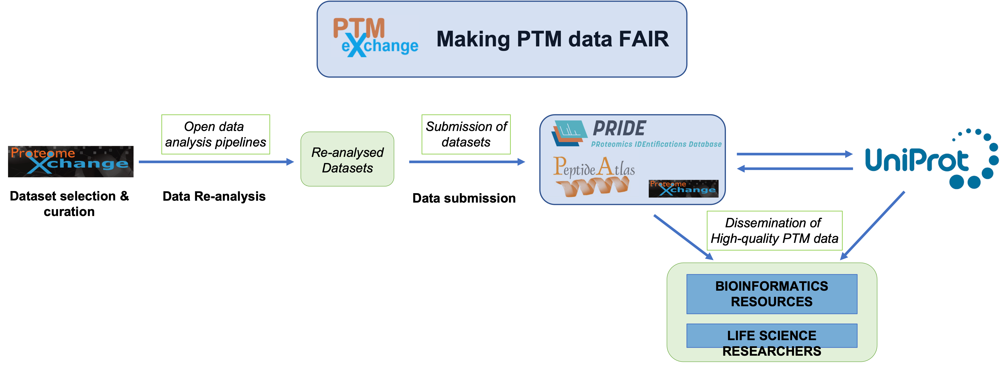

PTMXchange
The PTMeXchange project has been established to make Post-Translational Modification (PTM) data FAIR (Findable, Accessible, Interoperable and Re-usable). Briefly, public proteomics datasets from ProteomeXchange resources are selected and manually curated. Then, the datasets are reanalysed using open analysis pipelines. The results are resubmitted to PRIDE and/or made available via PeptideAtlas. Then, PTM data is integrated into UniProt, linking back to the original mass spectrometry evidence in ProteomeXchange resources. All produced data is released to the community.

Members
The current members of the Consortium are: PRIDE (EMBL-EBI, Cambridge, UK), PeptideAtlas (ISB, Seattle, WA, USA), Uniprot (EMBL-EBI, Cambridge, UK), University of Liverpool (University of Liverpool, Liverpool, UK).
We welcome other members to join these efforts.
Funding
This project is funded by BBSRC and NSF.